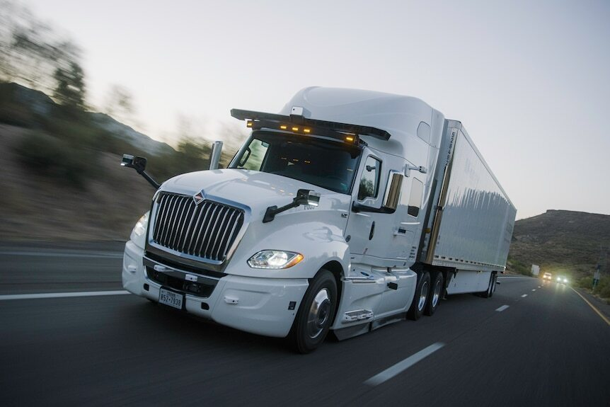

03 --- Cuarentena de Terror - Tomo 1
Acompañaba a mi padre a buscar harinas en el molino de Trevelin, todo estaba muy tranquilo como siempre, pero cuando volvimos por la ruta antes de llegar al acceso policial, vimos que un camión desde lo lejos embistió con violencia a una muchedumbre de personas. Estábamos desconcertados por el espectáculo dantesco y horroroso.
El camión siguió, y vimos lo que parecía una película de terror como The walking dead, y estaba pasando acá, en Esquel...
Tanto yo como mi papá, nos agarró el julepe y dijimos: rajemos, rajemos y sigamos al camión porque nos va a abrir paso...
Cuando llegamos por la rural, aparentemente no pasaba nada, entonces le metimos la marcha urgente para llegar a nuestro hogar y poner a salvo a nuestra familia.
Mientras llegábamos a nuestro hogar, escuchamos por la radio que sí, que en todos los lugares se había desatado esta ola de gente aparentemente muerta que estaba atacando a los vivos.
Cuando llegamos a casa, estábamos todos desesperados, queríamos organizarnos, y entre los gritos de mis padres, (uno queriendo arreglar todo y mi madre que no entendía nada, al no saber porque volvimos alterados) estábamos todos como locos.
